Варіант 8. Виконав Чумак Кирил, група ІПЗ-11(3). Викладач Ковалюк Тетяна Володимирівна.
Мета роботи
- Вивчити особливості рекурсивних процесів.
- Опанувати технологію рекурсивних обчислень.
- Навчитися розробляти алгоритми та програми із застосуванням рекурсивних функцій.
Умови задач
Лабораторна робота передбачає два завдання з використанням рекурсивних функцій. Обидві таблиці варіантів методички мають по 20 варіантів, тому для номера 28 у списку групи маємо 28 - 20 = 8.
Завдання 1, варіант 8
Обчислити значення рекурсивної функції, заданої рекурентним співвідношенням. Визначити глибину рекурсії. Здійснити аналіз ефективності рекурсивного розв'язку задачі. Програма повинна реалізовувати два способи розв'язання: з використанням рекурсії та з використанням ітерації (циклу). В процесі ітераційної реалізації слід підсумувати кількість ітерацій.
Увести з клавіатури два цілих додатних числа a та b. Обчислити добуток двох цілих додатних чисел за рекурентним співвідношенням:
a, якщо b = 1;
b, якщо a = 1;
0, якщо a = 0 або b = 0;
a + p(a, b - 1) в інших випадках
Реалізувати ітеративний варіант функції, використовуючи оператор циклу. Порівняти ефективність рекурсивної та ітеративної реалізацій, визначивши глибину рекурсії та кількість ітерацій циклу.
Завдання 2, варіант 8
Рекурсивна обробка послідовностей. Забороняється використовувати масиви і рядки. Використання рекурсії обов'язкове.
Увести з клавіатури два натуральних числа k та s. Визначити кількість k-значних натуральних чисел, сума цифр яких дорівнює s. Запис натурального числа не може починатися з цифри 0. В цьому завданні можна використовувати цикл для перебору всіх цифр, що стоять на будь-якій позиції. Контрольний тест: введені числа 3 15, отриманий результат: 69.
Аналіз задач
Завдання 1, варіант 8
Рекурсивна функція multiplyRecursive повторює формулу: гілки стоять у тому самому
порядку. Поки b не дійде до 1, функція додає a до значення p(a, b - 1).
В умові сказано про додатні числа, але у формулі є окремий випадок для нуля. Щоб ця гілка
працювала, програма приймає числа від 0. Верхня межа 10000, бо добуток 10000 · 10000 вміщається в
int. Якщо введено не число або число поза межами, програма виводить повідомлення і
просить ввести ще раз.
Глибину рекурсії рахують дві змінні. currentDepth збільшується на вході у функцію і
зменшується на виході, а maxDepth запам'ятовує її найбільше значення.
Циклічний варіант перевіряє ті самі умови. В останній гілці добуток спочатку дорівнює a, а цикл додає a ще b - 1 разів. Лічильник ітерацій збільшується лише в цьому циклі, тому в перших трьох гілках він дорівнює 0.
Коли a і b більші за 1, рекурсія має глибину b, а цикл робить b - 1 ітерацій. Додавань в обох способах однаково. Різниця в пам'яті: кожен незавершений виклик тримає в стеку свої параметри, а циклу потрібні лише кілька змінних. Для цієї задачі цикл ефективніший.
Таблиця 1 - Функції програми завдання 1
| Функція | Що робить |
|---|---|
printTitle | виводить назву роботи, автора й умову завдання |
inputNumber | вводить ціле число з перевіркою |
inputNumbers | вводить множники a і b |
multiplyRecursive | рахує добуток рекурсією і визначає глибину |
multiplyIterative | рахує добуток циклом і кількість ітерацій |
printResults | виводить результати обох способів |
main | викликає ці функції по черзі |
Завдання 2, варіант 8
Програма будує число зліва направо, по одній цифрі. Перша цифра береться від 1 до 9, бо запис
числа не починається з нуля. Цей перебір робить функція countNumbers.
Решту позицій заповнює рекурсивна функція countEndings. Вона пробує цифри від 0 до 9
і для кожної викликає себе, коли вільних позицій на одну менше, а сума менша на цю цифру. Коли
вільних позицій не лишилось, закінчення підходить лише за нульового залишку суми. Цифра, більша за
залишок суми, не перебирається.
Масивів і рядків у програмі немає. k вводиться від 1 до 7, щоб програма рахувала швидко. s вводиться від 1 до 63, бо 63 є найбільшою сумою цифр семизначного числа. Якщо сума завелика для заданого k, таких чисел немає, і програма виводить 0.
Таблиця 2 - Функції програми завдання 2
| Функція | Що робить |
|---|---|
printTitle | виводить назву роботи, автора й умову завдання |
inputNumber | вводить ціле число з перевіркою |
inputData | вводить k і s |
countEndings | рекурсивно рахує закінчення числа із заданою сумою |
countNumbers | перебирає першу цифру і підсумовує закінчення |
printResult | виводить кількість чисел |
main | викликає ці функції по черзі |
Джерела: Ковалюк Т.В. Алгоритмізація та програмування, 2024; Ковалюк Т.В., Петрівський В.Я. Гарний стиль програмування мовами C, C++, C#, 2025.
Блок-схеми алгоритмів
Завдання 1, варіант 8

printTitle (виведення назви роботи, автора й умови завдання)
inputNumber (введення цілого числа з перевіркою)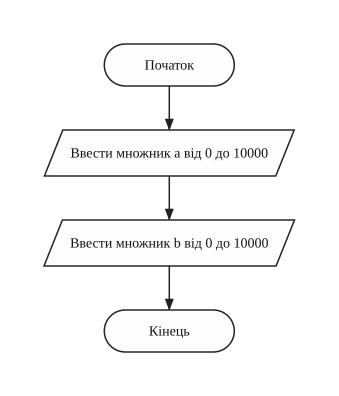
inputNumbers (введення двох множників)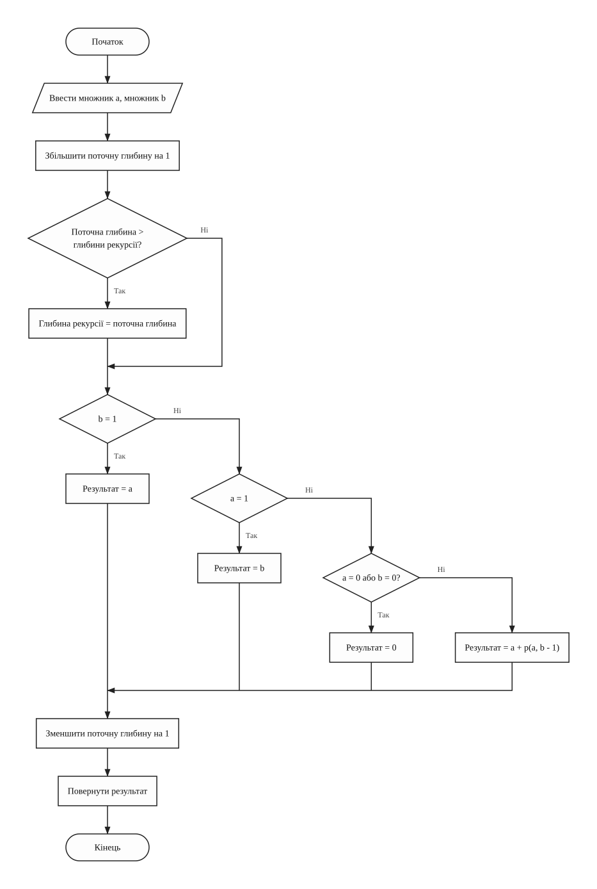
multiplyRecursive (рекурсивне обчислення добутку)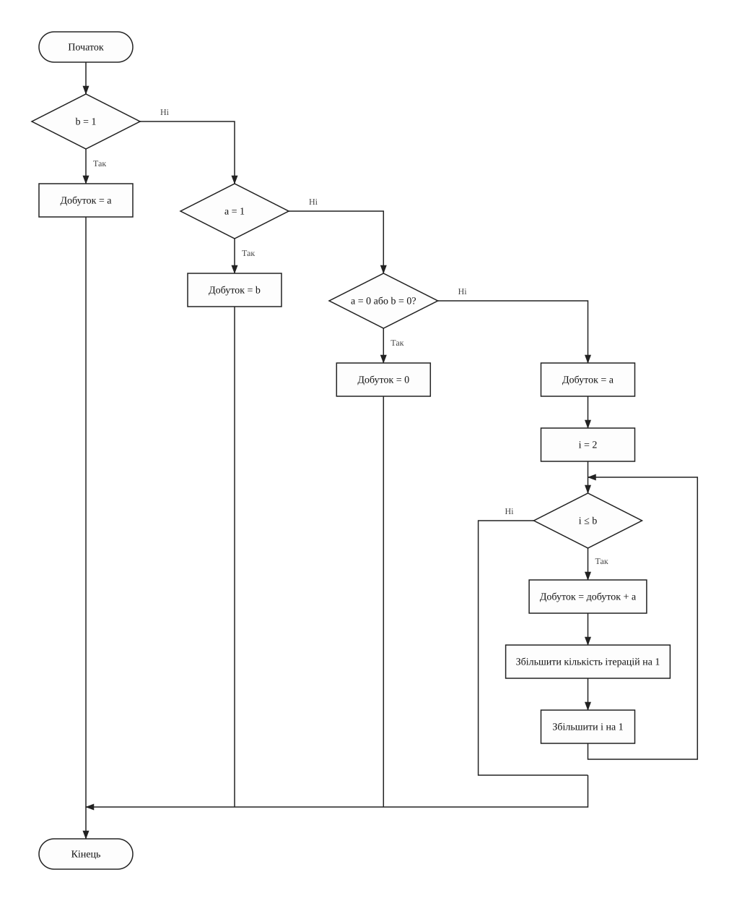
multiplyIterative (обчислення добутку циклом)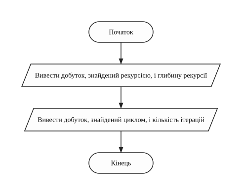
printResults (виведення результатів обох способів)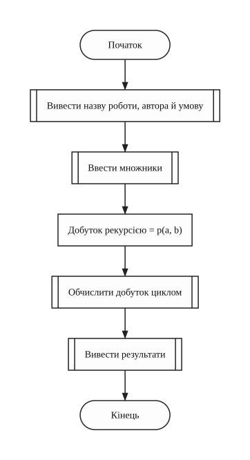
main (головна функція)Завдання 2, варіант 8

printTitle (виведення назви роботи, автора й умови завдання)
inputNumber (введення цілого числа з перевіркою)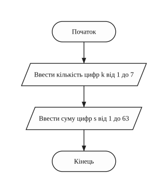
inputData (введення k і s)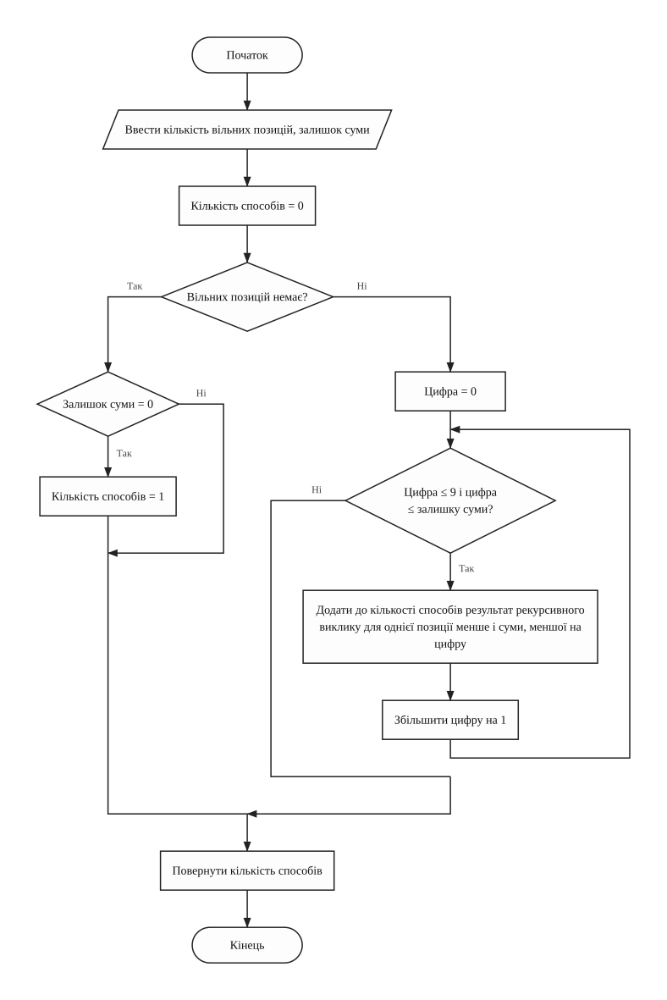
countEndings (рекурсивний підрахунок закінчень числа)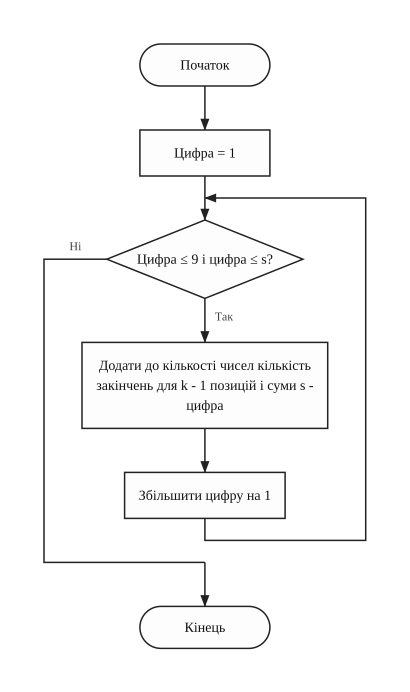
countNumbers (перебір першої цифри числа)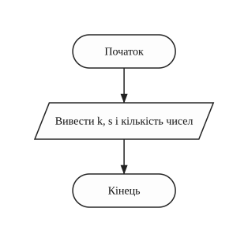
printResult (виведення результату)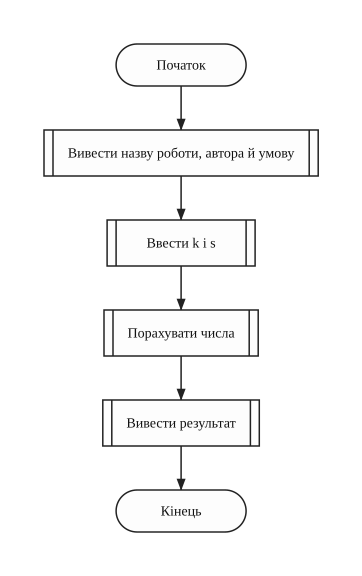
main (головна функція)Тексти програм
Завдання 1, варіант 8
Файл task1.cpp
/// <summary>
/// Лабораторна робота №5, завдання 1, варіант 8. Обчислити добуток двох чисел
/// за рекурентним співвідношенням рекурсією і циклом, знайти глибину рекурсії і
/// кількість ітерацій.
/// </summary>
/// <remarks>
/// Ім'я файлу: task1.cpp
/// Автор: Чумак Кирил, гр. ІПЗ-11(3)
/// Номер версії модуля: version 1
/// </remarks>
#include <iostream>
using namespace std;
// Константи
const int MIN_NUMBER = 0; // найменше допустиме число
const int MAX_NUMBER = 10000; // найбільше число, добуток вміщається в int
// Глобальні змінні
int firstNumber = 0; // перший множник a
int secondNumber = 0; // другий множник b
int recursiveProduct = 0; // добуток, знайдений рекурсією
int iterativeProduct = 0; // добуток, знайдений циклом
int currentDepth = 0; // кількість незавершених викликів зараз
int maxDepth = 0; // глибина рекурсії
int iterationCount = 0; // кількість ітерацій циклу
/// <summary>
/// Виводить назву роботи, автора і рекурентне співвідношення
/// </summary>
void printTitle()
{
cout << "Lab work 5. Task 1. Variant 8." << endl;
cout << "Author: Kyryl Chumak, group IPZ-11(3)" << endl << endl;
cout << "Enter two integers a, b and calculate their product by" << endl;
cout << "the recurrence relation, with recursion and with a loop." << endl;
cout << "Compare the recursion depth and the number of iterations." << endl
<< endl;
cout << " a, if b = 1" << endl;
cout << "p(a, b) = b, if a = 1" << endl;
cout << " 0, if a = 0 or b = 0" << endl;
cout << " a + p(a, b - 1), otherwise" << endl << endl;
}
/// <summary>
/// Вводить ціле число. Поки введено не число або число поза межами, введення
/// повторюється
/// </summary>
/// <param name="minValue">найменше значення</param>
/// <param name="maxValue">найбільше</param>
/// <returns>введене число</returns>
int inputNumber(int minValue, int maxValue)
{
int number = 0; // введене число
cin >> number;
while (cin.fail() || number < minValue || number > maxValue)
{
cin.clear(); // скинути помилку введення
cin.ignore(1000, '\n'); // і пропустити неправильний рядок
cout << "Error! Enter a number from " << minValue << " to " << maxValue
<< ": ";
cin >> number;
}
return number;
}
/// <summary>
/// Вводить два множники
/// </summary>
void inputNumbers()
{
cout << "Enter a (from 0 to 10000): ";
firstNumber = inputNumber(MIN_NUMBER, MAX_NUMBER);
cout << "Enter b (from 0 to 10000): ";
secondNumber = inputNumber(MIN_NUMBER, MAX_NUMBER);
}
/// <summary>
/// Обчислює добуток за рекурентним співвідношенням і запам'ятовує найбільшу
/// кількість незавершених викликів
/// </summary>
/// <param name="first">множник a</param>
/// <param name="second">множник b</param>
/// <returns>добуток a і b</returns>
int multiplyRecursive(int first, int second)
{
int result = 0; // значення p(a, b)
currentDepth++;
if (currentDepth > maxDepth)
{
maxDepth = currentDepth;
}
if (second == 1)
{
result = first;
}
else if (first == 1)
{
result = second;
}
else if (first == 0 || second == 0)
{
result = 0;
}
else
{
result = first + multiplyRecursive(first, second - 1);
}
currentDepth--;
return result;
}
/// <summary>
/// Обчислює добуток циклом. Умови ті самі, що в рекурентному співвідношенні, а
/// додавання виконуються в циклі
/// </summary>
void multiplyIterative()
{
int i = 0; // лічильник додавань
if (secondNumber == 1)
{
iterativeProduct = firstNumber;
}
else if (firstNumber == 1)
{
iterativeProduct = secondNumber;
}
else if (firstNumber == 0 || secondNumber == 0)
{
iterativeProduct = 0;
}
else
{
iterativeProduct = firstNumber;
for (i = 2; i <= secondNumber; i++)
{
iterativeProduct = iterativeProduct + firstNumber;
iterationCount++;
}
}
}
/// <summary>
/// Виводить результати обох способів
/// </summary>
void printResults()
{
cout << endl << "Recursion:" << endl;
cout << "p(" << firstNumber << ", " << secondNumber
<< ") = " << recursiveProduct << endl;
cout << "recursion depth: " << maxDepth << endl;
cout << endl << "Loop:" << endl;
cout << "p(" << firstNumber << ", " << secondNumber
<< ") = " << iterativeProduct << endl;
cout << "number of iterations: " << iterationCount << endl;
}
/// <summary>
/// Головна функція програми
/// </summary>
/// <returns>0 після завершення роботи</returns>
int main()
{
printTitle();
inputNumbers();
recursiveProduct = multiplyRecursive(firstNumber, secondNumber);
multiplyIterative();
printResults();
return 0;
}
Завдання 2, варіант 8
Файл task2.cpp
/// <summary>
/// Лабораторна робота №5, завдання 2, варіант 8. Рекурсивно знайти кількість
/// k-значних натуральних чисел із сумою цифр s.
/// </summary>
/// <remarks>
/// Ім'я файлу: task2.cpp
/// Автор: Чумак Кирил, гр. ІПЗ-11(3)
/// Номер версії модуля: version 1
/// </remarks>
#include <iostream>
using namespace std;
// Константи
const int MIN_DIGITS = 1; // найменша кількість цифр
const int MAX_DIGITS = 7; // найбільша кількість цифр
const int MIN_SUM = 1; // найменша сума цифр
const int MAX_SUM = 63; // найбільша сума цифр семизначного числа
// Глобальні змінні
int digitCount = 0; // кількість цифр k
int digitSum = 0; // сума цифр s
int numberCount = 0; // кількість знайдених чисел
/// <summary>
/// Виводить назву роботи, автора і завдання
/// </summary>
void printTitle()
{
cout << "Lab work 5. Task 2. Variant 8." << endl;
cout << "Author: Kyryl Chumak, group IPZ-11(3)" << endl << endl;
cout << "Enter natural numbers k and s. Count the k-digit natural" << endl;
cout << "numbers with the sum of digits s. The first digit is not" << endl;
cout << "0." << endl << endl;
}
/// <summary>
/// Вводить ціле число. Поки введено не число або число поза межами, введення
/// повторюється
/// </summary>
/// <param name="minValue">найменше значення</param>
/// <param name="maxValue">найбільше</param>
/// <returns>введене число</returns>
int inputNumber(int minValue, int maxValue)
{
int number = 0; // введене число
cin >> number;
while (cin.fail() || number < minValue || number > maxValue)
{
cin.clear(); // скинути помилку введення
cin.ignore(1000, '\n'); // і пропустити неправильний рядок
cout << "Error! Enter a number from " << minValue << " to " << maxValue
<< ": ";
cin >> number;
}
return number;
}
/// <summary>
/// Вводить кількість цифр k і суму цифр s
/// </summary>
void inputData()
{
cout << "Enter k (from 1 to 7): ";
digitCount = inputNumber(MIN_DIGITS, MAX_DIGITS);
cout << "Enter s (from 1 to 63): ";
digitSum = inputNumber(MIN_SUM, MAX_SUM);
}
/// <summary>
/// Рахує, скількома способами можна записати задану кількість цифр від 0 до 9
/// із заданою сумою. Для кожної цифри викликає себе для решти позицій
/// </summary>
/// <param name="digitsLeft">кількість вільних позицій</param>
/// <param name="sumLeft">сума, яку ще треба набрати</param>
/// <returns>кількість способів</returns>
int countEndings(int digitsLeft, int sumLeft)
{
int total = 0; // кількість способів
int digit = 0; // цифра на поточній позиції
if (digitsLeft == 0)
{
if (sumLeft == 0)
{
total = 1;
}
}
else
{
for (digit = 0; digit <= 9 && digit <= sumLeft; digit++)
{
total = total + countEndings(digitsLeft - 1, sumLeft - digit);
}
}
return total;
}
/// <summary>
/// Перебирає першу цифру числа від 1 до 9 і додає кількість закінчень для
/// кожної з них
/// </summary>
void countNumbers()
{
int digit = 0; // перша цифра числа
for (digit = 1; digit <= 9 && digit <= digitSum; digit++)
{
numberCount =
numberCount + countEndings(digitCount - 1, digitSum - digit);
}
}
/// <summary>
/// Виводить результат
/// </summary>
void printResult()
{
cout << endl
<< "Numbers with " << digitCount << " digits and digit sum "
<< digitSum << ": " << numberCount << endl;
}
/// <summary>
/// Головна функція програми
/// </summary>
/// <returns>0 після завершення роботи</returns>
int main()
{
printTitle();
inputData();
countNumbers();
printResult();
return 0;
}
Результати виконання
Завдання 1, варіант 8
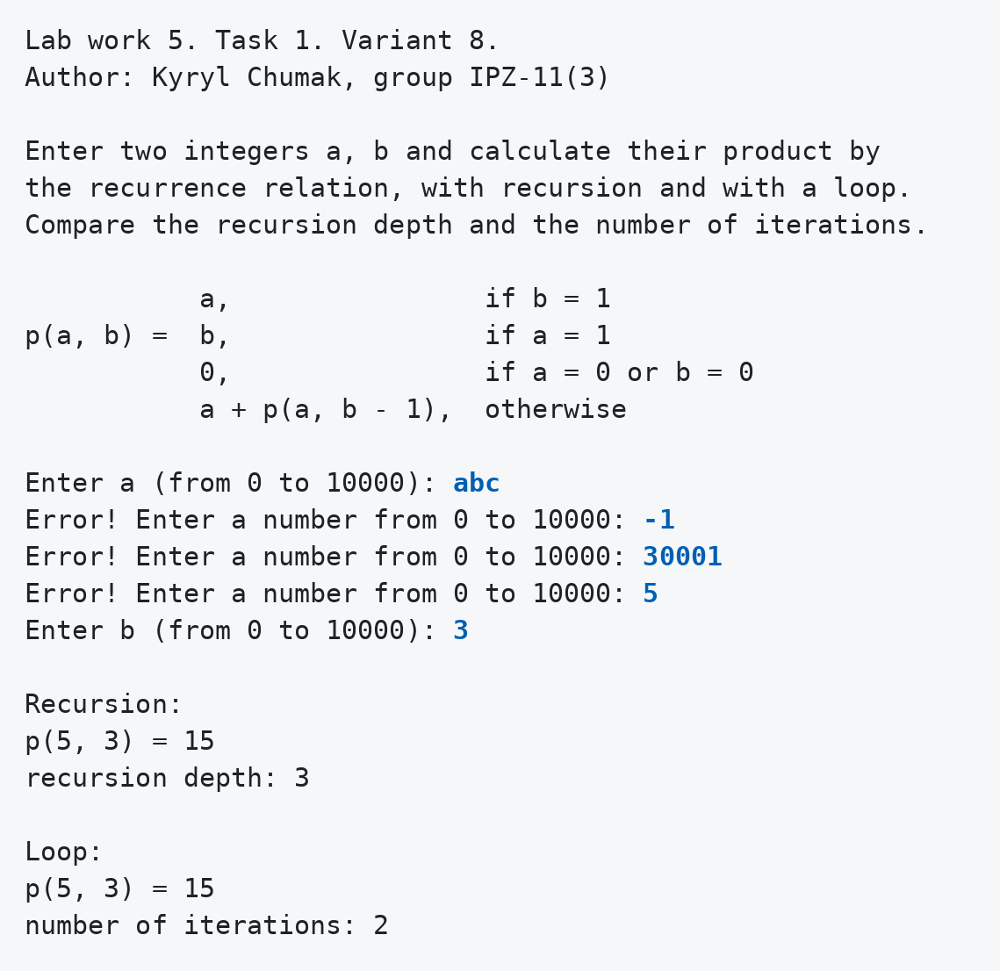
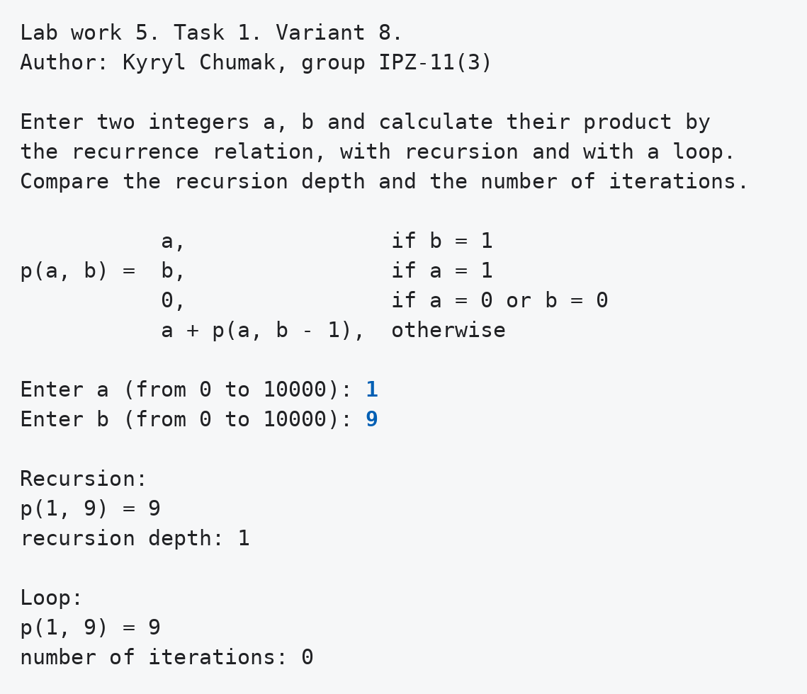
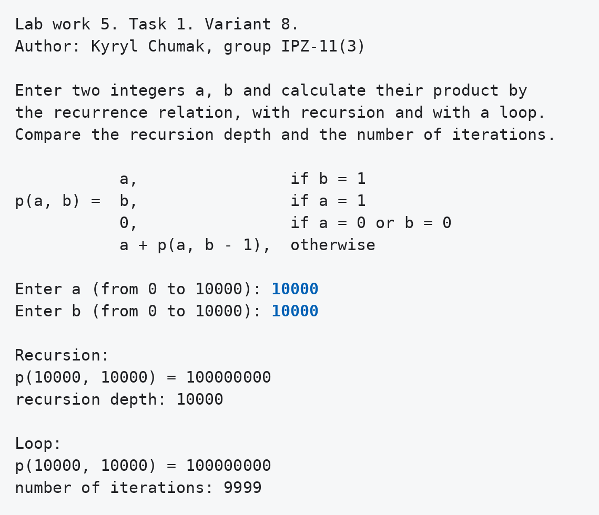
Завдання 2, варіант 8
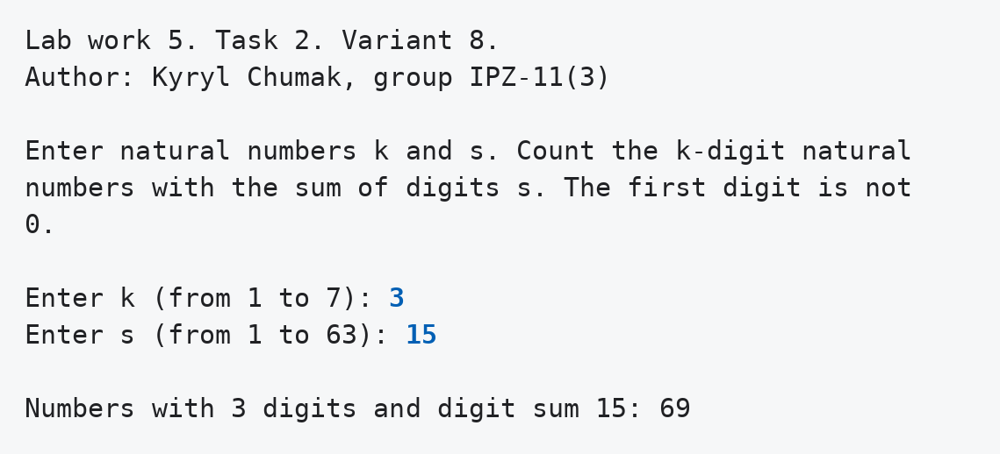
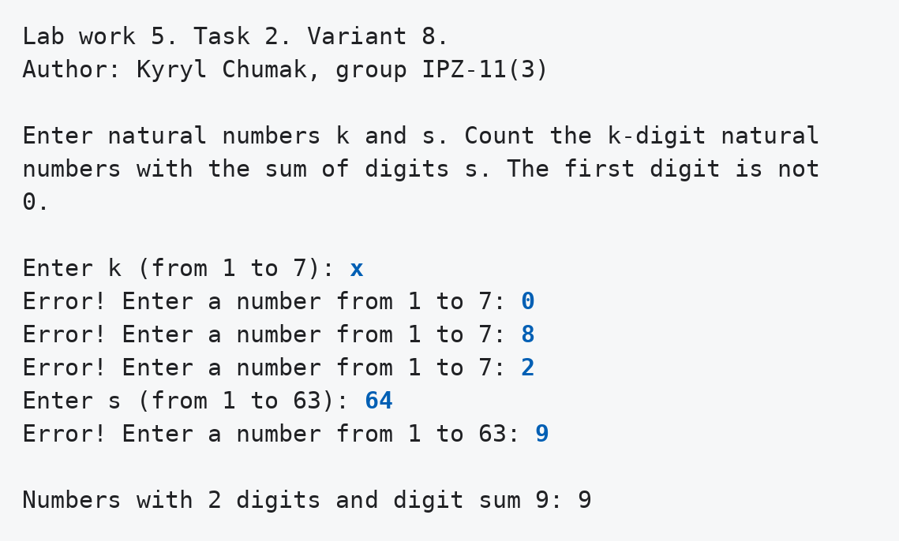
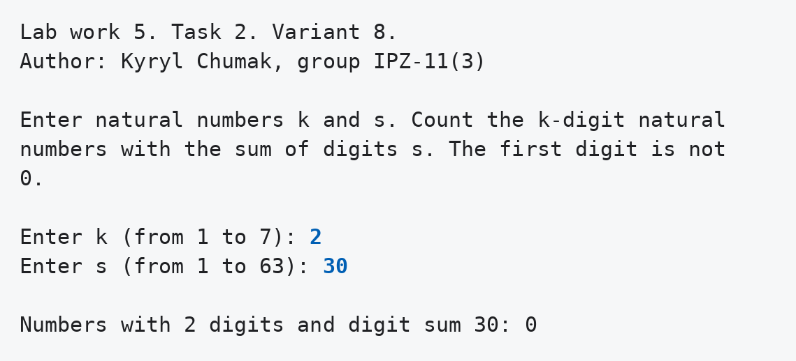
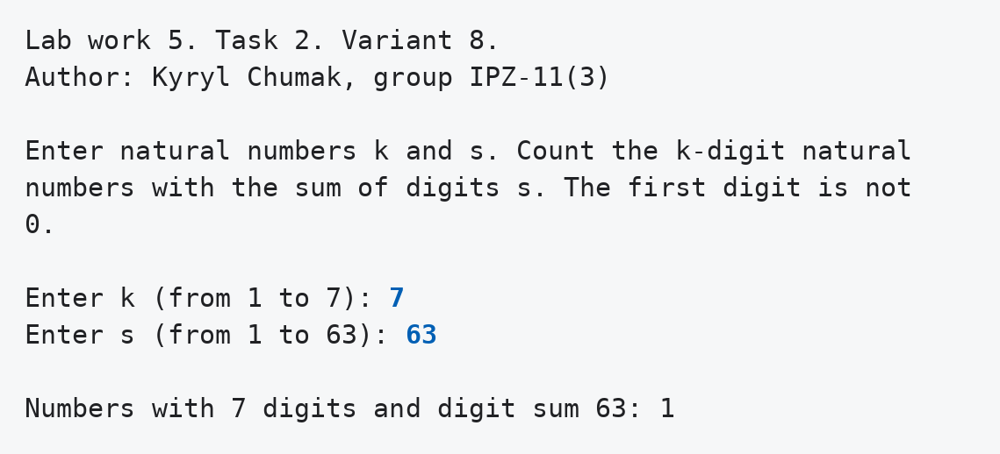
Аналіз достовірності результатів
Завдання 1, варіант 8
Для a = 5, b = 3 розписую виклики вручну: p(5, 3) = 5 + p(5, 2) = 5 + 5 + p(5, 1) = 5 + 5 + 5 = 15. Незавершених викликів три, тому глибина 3. У циклі до початкового значення 5 додається ще двічі, тому ітерацій 2. Решта рядків таблиці порахована так само.
Таблиця 3 - Ручний розрахунок і результати програми
| a | b | Гілка формули | Добуток вручну | Глибина вручну | Ітерацій вручну | Програма: рекурсія | Програма: цикл |
|---|---|---|---|---|---|---|---|
| 5 | 3 | a + p(a, b - 1) | 15 | 3 | 2 | 15, глибина 3 | 15, ітерацій 2 |
| 1 | 9 | a = 1 | 9 | 1 | 0 | 9, глибина 1 | 9, ітерацій 0 |
| 0 | 7 | a = 0 | 0 | 1 | 0 | 0, глибина 1 | 0, ітерацій 0 |
| 10000 | 10000 | a + p(a, b - 1) | 100000000 | 10000 | 9999 | 100000000, глибина 10000 | 100000000, ітерацій 9999 |
Завдання 2, варіант 8
Контрольний тест перевірено вручну. Для кожної першої цифри лишається сума t для двох цифр. Пар цифр із сумою t є t + 1, якщо t ≤ 9, і 19 - t, якщо t ≥ 10.
Таблиця 4 - Ручний підрахунок для k = 3, s = 15
| Перша цифра | 1 | 2 | 3 | 4 | 5 | 6 | 7 | 8 | 9 |
|---|---|---|---|---|---|---|---|---|---|
| t | 14 | 13 | 12 | 11 | 10 | 9 | 8 | 7 | 6 |
| Пар цифр | 5 | 6 | 7 | 8 | 9 | 10 | 9 | 8 | 7 |
Сума другого рядка 5 + 6 + 7 + 8 + 9 + 10 + 9 + 8 + 7 = 69, як у методичці й у програми.
Таблиця 5 - Контрольні приклади
| k | s | Міркування | Очікувано | Програма |
|---|---|---|---|---|
| 3 | 15 | контрольний тест методички | 69 | 69 |
| 2 | 9 | 18, 27, 36, 45, 54, 63, 72, 81, 90 | 9 | 9 |
| 2 | 30 | найбільша сума двох цифр 18 | 0 | 0 |
| 7 | 63 | лише число 9999999 | 1 | 1 |
Висновки
Рекурсія і цикл дали однакові добутки в усіх чотирьох запусках, але пам'ять витрачають по-різному. При a = 10000 і b = 10000 рекурсія пішла на глибину 10000, а цикл зробив 9999 ітерацій в одному виклику функції. Випадки a = 1 і a = 0 закінчуються відразу, тому глибина там дорівнює 1.
У другому завданні перша цифра не може бути нулем, тому для неї окремий цикл у countNumbers, а решту позицій
перебирає рекурсія. Контрольний тест методички дав 69, а ручний підрахунок за першою цифрою дав те
саме число.